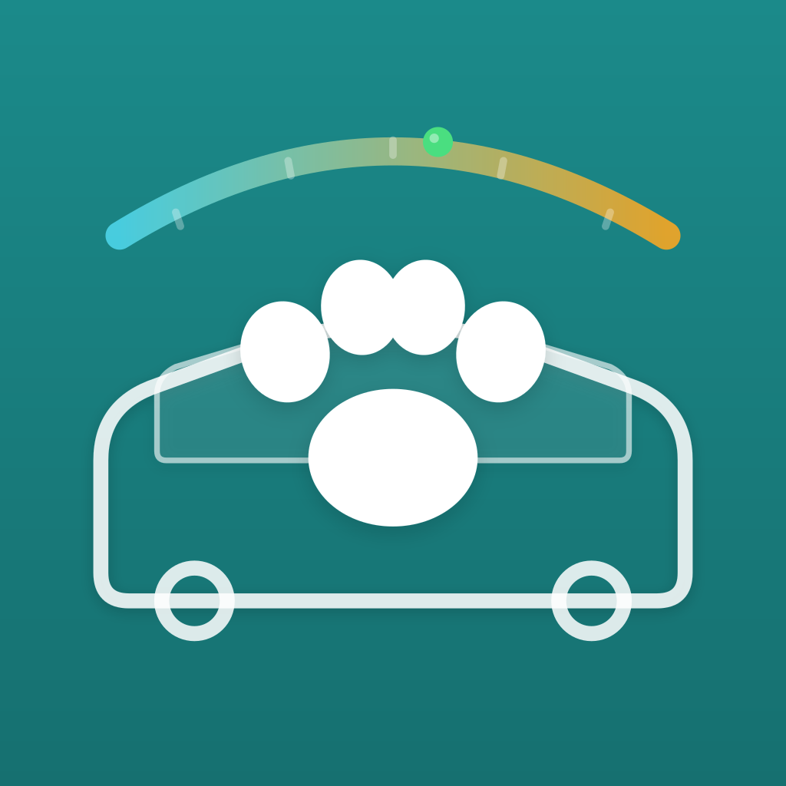
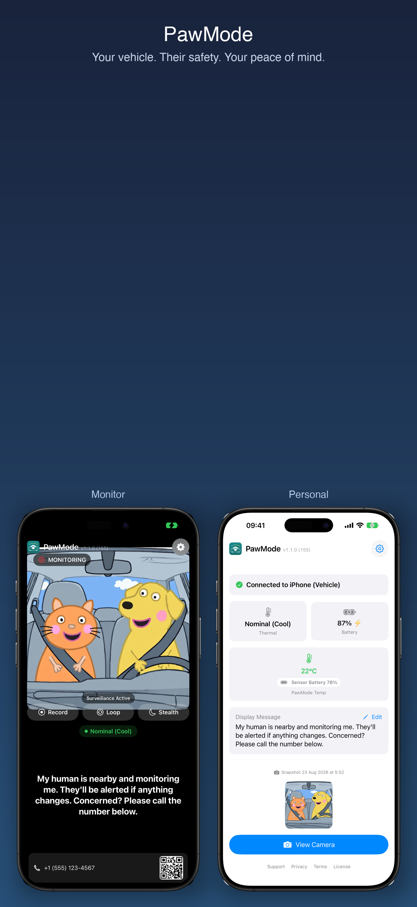

iOS Vehicle MonitorPawMode
Turn a spare iPhone into a live pet monitor for any parked car. Monitor thermal state, show a live camera feed, and reassure passersby — while you keep an eye on everything from your pocket.

iOS Vehicle MonitorTurn a spare iPhone into a live pet monitor for any parked car. Monitor thermal state, show a live camera feed, and reassure passersby — while you keep an eye on everything from your pocket.

PawMode pairs two iPhones over iCloud — one stays in the vehicle, the other stays with you. No accounts, no extra hardware.
Real-time thermal state with color-coded alerts: Nominal, Fair, Serious, and Critical. Get a push notification the moment conditions cross a threshold.
Front-camera dashcam runs on the monitor phone. Request a remote snapshot anytime from your personal device to check in on your pets.
Display a customizable message for passersby — "The air conditioning is running and my pets are safe." Auto-translates to the local language.
Pair by scanning a QR code — no account required. Devices sync over CloudKit with a 60-second heartbeat, even when backgrounded.
Repeating push notifications for thermal warnings, low battery, and offline status. Set the interval from 1 to 30 minutes.
Detects the local country via reverse geocoding and cycles the display message through relevant languages using Apple's on-device translation.
On-screen "REC", "Uploading to cloud", and "Surveillance Active" indicators double as a visible deterrent against tampering and break-ins.
Optional support for Xiaomi LYWSD-compatible external sensors for a more accurate cabin reading — the phone's thermal state is only part of the picture.
Lock the monitor with a passcode stored in the iOS Keychain. Stealth mode blanks the screen while the camera keeps running.
Live front-camera feed, thermal state display, reassurance message for passersby, contact QR code, video recording, and timed auto-snapshots. Keeps the screen awake and auto-dims after 5 minutes of inactivity.
Remote dashboard with thermal state, battery level, charging status, and sensor readings. Request snapshots, edit the display message, and get push alerts the instant conditions change or the monitor drops offline.
Available on the App Store for iPhone and iPad.